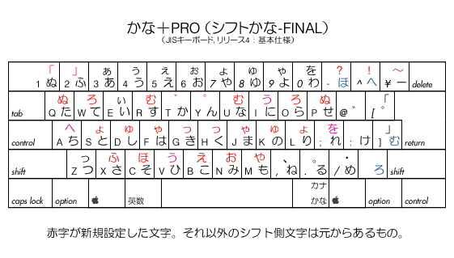
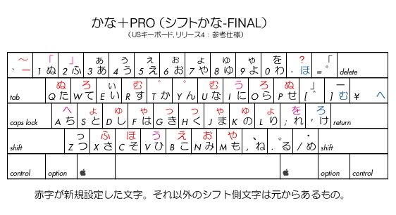

ようこそ！こちらは『JISかな＋』のサポートページです。
【『JISかな＋（シフトかな）』とは？】
JISキーボードの かな配列のうち、シフト側に文字が設定されていないキーに、
最上段や右手外野の文字を割り当て、
かな入力時の操作性を向上させる KCHRリソースです。
本バージョンでは、FINAL版ということで、
シフト側に配置した文字は、拙作『JISかな改』に準拠しています。
そこで、
１．現状のJIS配列に不満があるけれども 他の配列に移行する気力がない、
２．『JISかな改』を導入したいのだが、共有マシンなのでできない、
３．いきなり『JISかな改』に移行する前に慣らし運転をしてみたい、
・・・等、お考えの方には、ぜひオススメのソフトです。
なお、『JISかな＋』は、従来のJIS配列には なんら影響を与えません。
ダウンロードは こちら
から。（Mac OS 9 用，リリース1）
【配列図〈※リリース４〉】

図１基本仕様（JISキーボード使用時）

図２参考仕様（ANSIキーボード使用時）
なお、『JISかな＋』の Mac OS X 版(FINAL版・リリース4)を、本ＨＰ内に限り、
暫定的に配布することにします。
ただし、Mac OS X では、システムリソースにパッチを当てるわけにはいかないので、
当該ファイルを手動で入れ替えていただくことになります。
入れ換えるには、管理者権限が必要となります。（たいがいはマシンのオーナーです）
入れ換えるファイルは、
「System/Library/Keyboard
Layouts/Japanese.bundle/Contents/Resources/Japanese.rsrc」
です。
初めに元のファイルをバックアップして（普通に移動するだけでコピーになります）
その後、ゴミ箱に捨てます。この時、パスワードの入力が必要になります。
次に、当ファイルをこのフォルダーにコピーします。この時にもＰＷが必要です。
入れ換えたら再起動してください。
なお、当然ですが、自己責任で、元のファイルは捨てないで、大切に保存しておいてください。
万一不具合が発生した場合には、この逆の操作をして元に戻してください。
ダウンロードは こちら から。
（※当該ファイルのみです）
【『JISかな改』との違い 】
上にも述べた通り、『JISかな＋』は 拙作『JISかな改』に準拠しています。
ただし、基本コンセプトとして、JISかな配列には手を加えないと決めていますので、
シフト側に元々から設定されているものに関しては、元のものが優先されることになります。
（※アンシフト側は もちろん、JIS配列のママです）
これには 句読点などの記号類や、「ぃ」と「っ」などが 該当することになりますが、
したがって、『JISかな改』で その部分に設定されているものは、
シフト側に二重配置されないか、もしくは割り当てられるキーを変えています。
また、内側10列３段の中にあるものに関しては、
シフト側に再配置しないことにしています。
これには「ち」「ひ」「ね」が 該当し、
『JISかな改』で それらが置かれていた部分には、
他のキーとの組み合わせを考慮し、他の文字を配置しています。
この２つに関する部分が、『JISかな改』と 大きく異なる部分です。
しかし、これら以外の空きスペースに関しては、
アンシフト側も含め、『JISかな改』と 基本的に同じです。
以下、空きスペースに割り当てた文字について説明します。
【う】
これはシフト側に置いてでも使いたい文字の１つで、
FINAL版リリース4では、［ひ］と［に］のシフト側に配置しています。
特に左手側の「う」に関しては、ちょうど、元々の位置と指使いが同じになる上、
他のシフト側の文字「ゅ」「ょ」と共に用いて、拗音を含む二重母音が打ちやすくなるでしょう。
【へ】
これは『かな改』では［Ｚ］のシフト側に置かれていましたが、
JIS配列では そこに すでに「っ」が 配置されていますので、
『かな＋』では これを同じ指使いのまま［Ａ］のシフト側に置くことにします。
ここは『かな改』では「ち」が置かれていた場所ですが、
JIS配列ではアンシフト側にあるので、二重配置する必要はないので、
ちょうど空きスペースになる場所です。
【を】
これは『かな改』では［＠］の位置に置いていたものですが、
JIS配列では 濁点が 配置されていますので、
『かな＋』では これを同じ指使いのまま［；］のシフト側に置くことにします。
ここは、上の「へ」の場合と同様、『かな改』では「ち」が置かれていたので、
ちょうど空きスペースとなる場所です。
元々の JIS配列の場合と比べ、腕を動かさず、シフト操作だけで「を」が打てるので、
これはかなり楽になったと実感できるのではないでしょうか？
【進化の過程】
『JISかな＋』は 1999年の誕生以来、数回の仕様変更を経ています。
（※初公開の時は『ハイパーかな入力』という名称でした）
本来こういうものは、そう簡単に仕様変更していいものでは ありません。(汗)
その懺悔の意味も含めて(?)、過去の修正履歴を公開しようと思います。
これにより、現バージョンが なぜ FINAL版といえるのか、
理解していただける一端ともなれば 幸いです。
【バージョン1.5?〈仕様のみ公開〉】

幻の1.5です。NIFTY/FKBOARDでの議論を踏まえ、
シフトキーとの組み合わせを考慮し、右手側に打ちにくい文字を配置しました。
あと、Dvorak配列を見習って、左手ホーム段に母音を並べました。
今から思うと、これでも笑ってしまうような並びなのですが、
『JISかな改』を考案するまでは、かなり本格的に使っていました。
しかし、振り返ってみれば、右手ホーム段のオンビキと促音ぐらいしか、
活用してなかったような気がします。
シフト側の濁点と半濁点は、結局、ほとんど使いませんでした。
（というか、ほとんど無意味かもしれない...(汗)）
右手上段に配置した拗音は、それなりには便利でも
『JISかな改』と比べてしまうと、やはり使い勝手は良くないですね。
左手下段の「やゆよ」に至っては、ほとんど使わず・・・。
また、左手ホーム段の母音は、やはりアンシフト側にあってこそ、
使い勝手が良いといえるものなので、ほとんど意味はないですね。
その他の使用頻度の低い一群に関しても、
配置を決めているのは、運指ではなく、英字との関連で、
覚えやすかろうと思っていたのですが、
それほど覚えやすいこともなく、使いやすくもなく・・・。
これらのことから考えても、
現状の『JISかな改』が いかに完成度が高いか、
よくわかります。(^_^;
【バージョン1.2.5】

NIFTY/FGALNEXTに投稿したバージョンです。事実上の最終公開版です。
前バージョンとの違いは「を」の位置ですね。
この頃のものは、最適化と運指に対する考慮がほとんどなされていないので、
単に最上段や右手外野の打ちにくいキーが打ちやすいということだけで、
良しとしていました。
特に、母音の二重配置に関しては、
ただ、キーを埋めているだけという感じですね・・・。
【バージョン1.2】

大幅な見直し(?)をしました。（…のつもり）
本来ならこれを初公開版とするべきでした。(汗)
バージョン1.0との違いは、無意味な二重配置をやめ、
少し、指使いと運指に気を遣い始めたという点でしょうか？
それでも 今から見ると、まだまだ幼いというか、
ほとんど何も考えていないに近いのですが、(汗)
これが あってこそ『JISかな改』につながっていくわけですね…（言い訳）
【バージョン1.0〈初公開版〉】

恥ずかしいですね〜。アイデア先行型／企画倒れの典型例です。(滝汗)
いちおう配置のコンセプトとしては、英字の並びとリンクしているつもりなのですが…。
結果的には、覚えやすくもなく、使いやすくもないとゆー。
あえて弁護をするなら(笑)、散らばっている文字をシフト側にも二重配置して、
シフト＆ホールドの技で、何かしら押しやすくなるものがあるんじゃなかろうか(爆)
という程度のひらめきがあるような気がします。(^.^;;;
ちなみに、投稿先は NIFTY/FMACUSLです。
・・・・・・・・・・・・・・・・・・・・・・・・・・・・・・・・・・・・・・・・
→ かな入力推進委員会(?)のページ（もはや、ローマ字入力は
いらない(笑)）